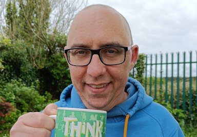

Loneliness has become a serious problem in Ireland. We have the highest reported rate of loneliness in Europe with as many as one in five saying they regularly experience it. When we hear about loneliness we first think of this affecting older men, but surprisingly, it's younger people as well as older ones who suffer in this country. Eoin Madden, Green party candidate for the Athenry-Oranmore LEA says he passionately believes that a core responsibility of the council to provide adequate community spaces.
Loneliness is not simply just being alone. It is a complex emotional response to a lack of meaningful social connections. Galway senator, Pauline O’Reilly, recently brought a bill to the Seanad on the topic of loneliness and has described it as an epidemic.
Social connections do not just happen by accident. Local planning and development put structures in place that enable people to meet, socialise and bring others into parts of their lives.
Experts who study this talk about the importance of what they call "third spaces". If your home is your first space, and your place of work or education is your second, the third spaces are all the others where people can voluntarily interact. Traditionally the pub and church were important third spaces in Ireland, but these institutions are falling out of popularity so we have to see what new spaces can be provided.
Local sports clubs can provide a great way for people to build up those connections, and we should support them, but they are not for everyone.
Youth clubs can provide opportunities for young people to develop, but they need funding and enthusiastic volunteers. In a rural community it is often the same volunteers who are training kids in soccer, taking part in tidy towns and raising money for the school. Eoin Madden says “With people working longer hours and commuting further, and so many distractions on TV and phones, some people feel they have less opportunity to spend time in the community. But I believe a core part of the Green message is that materialism doesn’t buy happiness, rather it is human connection and a sense of purpose that brings resilient contentment.”
“I am not naturally sporty, but I have really enjoyed helping to coach children at my local hurling club. My talents lie in computers so I became a coach at CoderDojo Athenry. CoderDojo is a coding club, free to join, where kids can learn to express their creativity and problem solve using computer code. We find it particularly suits children who may be neurodiverse."
"I'm also heavily involved in Killimordaly playground, where we recently installed new equipment, fencing and a bike rack. My hope in the future is to add gymnastic equipment suitable for teenagers and provide facilities for teens to “hang out” safely and where they aren't under pressure to buy junk food or alcohol", continues Mr. Madden.
“There are fewer supports in place for older people, although libraries and community halls continue to provide valuable meeting places and their place in communities should never be taken for granted. We should be mindful in the coming elections that some far right candidates have been openly hostile to librarians. I will always support the wonderful work librarians do in sourcing books appropriate to their audience. This was invaluable during Covid lockdowns”.
International research has shown that chronic loneliness can have grave implications for people's physical and mental health. Finding activities to which people can contribute, in the third spaces we create as a community is key to tackling this silent epidemic and putting much-needed social interaction back into so many people's lives.
Eoin says, “I feel nobody else is talking about 3rd spaces, but I’m asking voters to make libraries, community halls, sheds and playgrounds a priority in the next election. This is an area where local councillors have a role to play in taking concrete action to build communities with strong bonds and resilient mental health.”